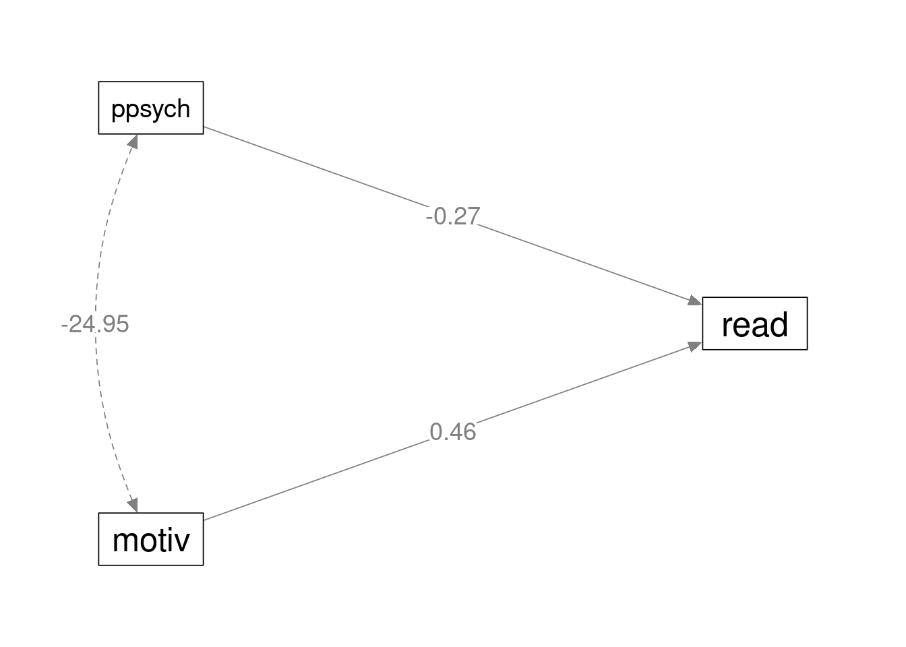

Simple models
(Marcello Gallucci)
keywords multiple regression, path analysis, lavaan, multivatiate regression
Draft version, mistakes may be around
In this example we show how to estimate simple regression models with PATHj. The aim is threefold: first, it may help to start with simple models to familiarize with path analysis, and see how path analysis encompasses models usually estimated with the General Linear Model (but look at [GAMLj module])(https://gamlj.github.io/) for a specialized module in jamovi). Second, we are going to estimate some models discussed in UCLA statistical consulting webpage, so one can compare the results obtained in lavaan with the ones obtained in PATHj. Third, we show how to add some interesting test and twist to simple regression models.
Much of the output that PATHj produces is labeled as it is in lavaan R package output, so lots of information can be found in lavaan help and tutorials
Research data
The data we use can be found here at UCLA. The sample is composed by 500 students, each with 9 observed variables: Motivation (motiv), Harmony (harm), Stability (stabi), Negative Parental Psychology (ppsych), SES, Verbal IQ (verbal), Reading (read), Arithmetic (arith) and Spelling (spell). They are all continuous variables.
Simple regression (Model 1A)
First, we estimate a simple regression with read as dependent (endogenous) variable and motiv as independent (exogenous) variable.
Input
In PATHj we set the variables roles in the first panel as shown here:

and then specify the endogenous variable predictor in the Endogenous Models panel

Because we want to see the path diagram of the model (although in this case is too simple to be interesting), we ask for the path diagram in the Path Diagram panel.

Output
General info
Models Info
─────────────────────────────────────────────────────────
─────────────────────────────────────────────────────────
Estimation Method ML .
Number of observations 500
Free parameters 3
Converged TRUE
Loglikelihood user model -1777.823
Loglikelihood unrestricted model -1777.823
Model read ~ motiv
─────────────────────────────────────────────────────────
The first table we obtain informs us about the sample size, the model we run, and the log-likelihood. We have 500 cases, upon which we estimated the read~motiv model, which requires 3 free parameters: The effect of motiv on read, the variance of read and the intercept.
Loglikelihood user model and Loglikelihood unrestricted model are the same and indicate the log likelihood of the model. They are the same because we did not restrict any parameter, so the user model is the unrestricted model.
Overall tests
OVERALL TESTS Model Tests ────────────────────────────────────────────────── Label X² df p ────────────────────────────────────────────────── Baseline Model 164.8774 1 < .0000001 ────────────────────────────────────────────────── Fit Indices ───────────────────────────────────────────────────────────────────────────────────────────────────── AIC BIC adj. BIC SRMR RMSEA Lower Upper RMSEA p ───────────────────────────────────────────────────────────────────────────────────────────────────── 3561.645 3574.289 3564.767 0.0000000 0.0000000 0.0000000 0.0000000 ─────────────────────────────────────────────────────────────────────────────────────────────────────
Model tests table reports the chi-square of the whole model. Because there is no fixed parameter, the model chi-square is zero, and it is not shown. The Baseline model row refers to the comparison between the user model, that is read~motiv, and a model in which the variables covariance is set to zero. In this case, it is simply testing that the effect of motiv on read is different from zero.
Fit indices are the standard indices reported is structural equation models.
\(R^2\)
R-squared ─────────────────────────────────────────────────── Variable R² Lower Upper ─────────────────────────────────────────────────── read 0.2809000 0.2151737 0.3484043 ───────────────────────────────────────────────────
The \(R^2\) and its’ confidence interval is reported. For details about the C.I. estimation, please refer to PATHj computation details
Coefficients
Parameter Estimates ───────────────────────────────────────────────────────────────────────────────────────────────────────────── Dep Pred Estimate SE Lower Upper β z p ───────────────────────────────────────────────────────────────────────────────────────────────────────────── read motiv 0.5300000 0.03792361 0.4556711 0.6043289 0.5300000 13.97546 < .0000001 ─────────────────────────────────────────────────────────────────────────────────────────────────────────────
The Parameter Estimates table reports the regression coefficients. Notice that the Estimate is the B coefficient, and the \(\beta\) is the fully standardized coefficient. In this case are equal because the variables have the same variance (100), which implies that B and \(\beta\) are equal.
Additional parameters
Variances and Covariances ────────────────────────────────────────────────────────────────────────────────────────────────────────────────────────────────────────── Variable 1 Variable 2 Estimate SE Lower Upper β z p Method Type ────────────────────────────────────────────────────────────────────────────────────────────────────────────────────────────────────────── read read 71.76618 4.538892 62.87011 80.66224 0.7191000 15.81139 < .0000001 Estim Residuals motiv motiv 99.80000 0.000000 99.80000 99.80000 1.0000000 Sample Variables ──────────────────────────────────────────────────────────────────────────────────────────────────────────────────────────────────────────
The Variances and Covariances table reports variables estimated parameters. As regards read, we obtain the estimated residual variance (cf. columns Type and Method). For motiv, we obtain the whole variance computed in the sample. This happens because, by default, PATHj assumes the exogenous variables to be fixed variables, like in standard regression. This is usually a good idea, but in case one wants to estimate also the variances of the exogenous variables, one can unselect the option Parameters Options -> Fixed Exogenous. Alternatively, one can estimate this variance by specifying in Custom Model Setting the code motive~~motive.
The Intercepts table reports the intercepts. Coherently with the fact that the variables are centered to their means in the original data-set, all intercepts are 0.
Intercepts ───────────────────────────────────────────────────────────────────────────────────────────── Variable Intercept SE Lower Upper z p ───────────────────────────────────────────────────────────────────────────────────────────── read -0.0000000 0.3788566 -0.7425454 0.7425454 -0.0000000 1.0000000 motiv 0.0000002 0.0000000 0.0000002 0.0000002 ─────────────────────────────────────────────────────────────────────────────────────────────
These results, in terms of coefficients and \(R^2\), are equivalent to the results one would obtain with a standard OLS regression.
Multiple regression (Model 2)
Input
In model 2 we add a second predictor ppsych, first in the variables role panel, then to the endogenous variables model.

Output
Results are in line with a standard multiple regression model. The path diagram is as follows

We do not go through the output again, because we would find the same tables with the same interpretation as before. However, we can do something with this model that OLS regression does not allow to do with simplicity. We test the null-hypothesis that the two predictors have the same effect. In other words, we test that the effect from motiv to read is not different from the effect from ppsych to read.
Let’s look at the parameters we have just estimated.
Parameter Estimates ─────────────────────────────────────────────────────────────────────────────────────────────────────────────────── Dep Pred Estimate SE Lower Upper β z p ─────────────────────────────────────────────────────────────────────────────────────────────────────────────────── read motiv 0.4613333 0.03719135 0.3884396 0.5342270 0.4613333 12.404318 < .0000001 read ppsych -0.2746667 0.03719135 -0.3475604 -0.2017730 -0.2746667 -7.385230 < .0000001 ───────────────────────────────────────────────────────────────────────────────────────────────────────────────────
Variances and Covariances ────────────────────────────────────────────────────────────────────────────────────────────────────────────────────────────────────────────── Variable 1 Variable 2 Estimate SE Lower Upper β z p Method Type ────────────────────────────────────────────────────────────────────────────────────────────────────────────────────────────────────────────── read read 64.70766 4.092472 56.68656 72.72876 0.6483733 15.81139 < .0000001 Estim Residuals motiv motiv 99.80000 0.000000 99.80000 99.80000 1.0000000 Sample Variables motiv ppsych -24.95000 0.000000 -24.95000 -24.95000 -0.2500000 Sample Variables ppsych ppsych 99.80000 0.000000 99.80000 99.80000 1.0000000 Sample Variables ──────────────────────────────────────────────────────────────────────────────────────────────────────────────────────────────────────────────
We want to test the null-hypothesis .461=-.275. This test makes sense because the two coefficients have the same scale, as indicated by the fact that motiv and ppsych have the same variance (see Variances and Covariances table).
To obtain this test, we need to restrict the two coefficients to be equal. We go to Custom Model Settings and flag the option Show parameters labels.

Parameters labels are shortcuts to refer to a coefficient used in lavaan syntax. PATHj assigns automatically a label to each parameter from p1 to pk, where k is the number of parameters in the model. Parameters labels are shown in the tables.
Parameter Estimates ──────────────────────────────────────────────────────────────────────────────────────────────────────────────────────────── Label Dep Pred Estimate SE Lower Upper β z p ──────────────────────────────────────────────────────────────────────────────────────────────────────────────────────────── p1 read motiv 0.4613333 0.03719135 0.3884396 0.5342270 0.4613333 12.404318 < .0000001 p2 read ppsych -0.2746667 0.03719135 -0.3475604 -0.2017730 -0.2746667 -7.385230 < .0000001 ────────────────────────────────────────────────────────────────────────────────────────────────────────────────────────────
We see in the table that the two coefficients that are interesting us are labeled p1 and p2. Thus, we go to the Custom Model Settings panel and constraints them as equal.

The output now reports the coefficients as equal to .093.
Parameter Estimates ───────────────────────────────────────────────────────────────────────────────────────────────────────────────────────── Label Dep Pred Estimate SE Lower Upper β z p ───────────────────────────────────────────────────────────────────────────────────────────────────────────────────────── p1 read motiv 0.09333345 0.03627549 0.02223479 0.1644321 0.09333344 2.572907 0.0100848 p2 read ppsych 0.09333345 0.03627549 0.02223479 0.1644321 0.09333344 2.572907 0.0100848 ─────────────────────────────────────────────────────────────────────────────────────────────────────────────────────────
In the output we also find a new table, Constraints Score Tests, which provides a chi-square test comparing the original model with the constrained model with the two coefficients set as equal. The test null-hypothesis is that they are equal, thus if one finds the test to be significant, one can reject the null-hypothesis. In this case, the coefficients can be considered as statistically different.
Contraints Score Tests ────────────────────────────────────────────────────────────────────── Type Par 1 Par 2 X² df p ────────────────────────────────────────────────────────────────────── Univariate p1 == p2 171.5212 1 < .0000001 ──────────────────────────────────────────────────────────────────────
We the same logic, one can test any reasonable hypothesis is a model by restricting the appropriate coefficients to be equal or to equates a specific value.
Multivariate regression
(Models 3A-E)
We can now add some endogenous dependent variables. We add arith (arithmetic test score) as dependent variable in the model, with motiv and ppsych as predictors of read, and only motiv as predictor of arith. The path diagram looks like this.

We obtain this model by adding arith to the Endogeneous Variables field, and then defining its predictors in the Endogenous Models panel.

We get exactly the same results obtained in lavaan (cf UCLA statistical consulting webpage).
Parameter Estimates ──────────────────────────────────────────────────────────────────────────────────────────────────────────────────── Dep Pred Estimate SE Lower Upper β z p ──────────────────────────────────────────────────────────────────────────────────────────────────────────────────── read motiv 0.4760551 0.03685136 0.4038278 0.5482824 0.4818295 12.918251 < .0000001 read ppsych -0.2157799 0.02960408 -0.2738028 -0.1577570 -0.2183973 -7.288856 < .0000001 arith motiv 0.6000000 0.03577708 0.5298782 0.6701218 0.6000000 16.770512 < .0000001 ────────────────────────────────────────────────────────────────────────────────────────────────────────────────────
In UCLA page, there is an interesting discussion about the residuals variances of this model, compared with a model with endogenous covariances set to zero. The discussion is useful to understand the difference in the results of a multivariate path analysis model (more than one dependent variable) as compared with a series of univariate models.
We can reason on this issue from the angle of the variance explained, thus the \(R^2\)’s.
Model 3 \(R^2\) are the following:
R-squared ─────────────────────────────────────────────────── Variable R² Lower Upper ─────────────────────────────────────────────────── read 0.3324722 0.2651743 0.3998319 arith 0.3600000 0.2924227 0.4268228 ───────────────────────────────────────────────────
We can wonder what would be the \(R^2\)’s one obtains if one runs two independent multiple regressions, one for each dependent variables. Employing jamovi regression, we obtain:
Dependent=read

Dependent=arith

For arith the \(R^2\) is the same found with PATHj, but for read it is different. The reason is that the two regressions do not consider the correlation between read and arith, that cannot be included in the model and help to explain variance. The path analysis model, instead, considers that variance and incorporates it in the variance explained.
If we want to obtain with the path analysis the exact results obtained with two regressions, we should set the correlation between read and arith to zero, so the model would not include it in the variance explained. We can do that by setting the corresponding label (p6) to zero in the Custom Model Settings with the directive p8==0.
R-squared ─────────────────────────────────────────────────── Variable R² Lower Upper ─────────────────────────────────────────────────── read 0.3516267 0.2840957 0.4186440 arith 0.3600000 0.2924227 0.4268228 ───────────────────────────────────────────────────
Results are now identical to the individual regressions. In other words, the advantage of a multivariate model over a series of individual univariate models is that the endogenous variables correlations are taken into the account in the former, and ignored in the latter. incidentally, a multivariate model with orthogonal (not correlated) dependent variables does not have any advantage over a series of univariate models.